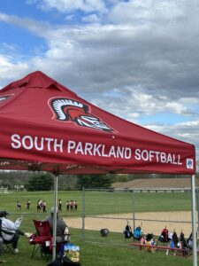

Sports
Softball
Youth softball and team development.
Program Overview
Youth Softball
SPYA participates in the Eastern Pennsylvania Girls Softball League. Teams typically include 8U, 10U, and 12U, with 14U dependent on interest.
Playing Location
Practices and home games take place at Springhouse Middle School, 1200 Springhouse Road, Allentown. Confirm the field and time in team communications.
Late Registration
The program asks families seeking a place after the registration window to email the commissioner. Late placement depends on available space.
Field Location
